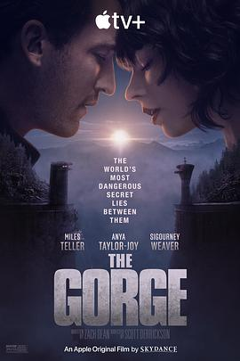

峡谷 / The Gorge
又名：禁谷
出乎意料的好看，生化危机的设定，但是前面的铺垫都很有意思。本来以为说的是两个狙击手狙击的故事，结果只是略爽的一个打僵尸的故事，但是考虑到叙事非常吊胃口，还是给4星。
作品信息
| 导演 | 斯科特·德瑞克森 |
| 编剧 | 扎克·迪恩 |
| 主演 | 迈尔斯·特勒 / 安雅·泰勒-乔伊 / 西格妮·韦弗 / 索佩·迪瑞苏 / 威廉·休斯顿 / 寇布勒·霍尔德布鲁克-史密斯 / 詹姆斯·马洛 / 朱丽安娜·库洛卡娃 / 露塔·格德米纳斯 / 奥利弗·特雷韦纳 / 萨钦·巴特 / 萨曼莎·考格兰 / 亚历桑德罗·加西亚 / 格蕾塔·汉森 / 奥利弗·梅森 / 拉丽莎·穆努兹·梅贾 / 亚当·斯科特-罗雷 / 约瑟夫·塔罗斯 |
| 类型 | 动作 / 爱情 / 科幻 / 恐怖 / 冒险 |
| 制片国家/地区 | 英国 / 美国 |
| 语言 | 英语 / 立陶宛语 |
| 上映日期 | 2025-02-14(美国网络) |
| 片长 | 127分钟 |
| IMDb | tt13654226 |
说过什么
2025-04-15 05:50:31
看过 · 时间来自广播，短评来自标记页
出乎意料的好看，生化危机的设定，但是前面的铺垫都很有意思。本来以为说的是两个狙击手狙击的故事，结果只是略爽的一个打僵尸的故事，但是考虑到叙事非常吊胃口，还是给4星。
2024-12-30 17:12:02
广播 · 想看
最后一次看到是 2026-08-01T11:04:06+10:00 · 豆瓣原页